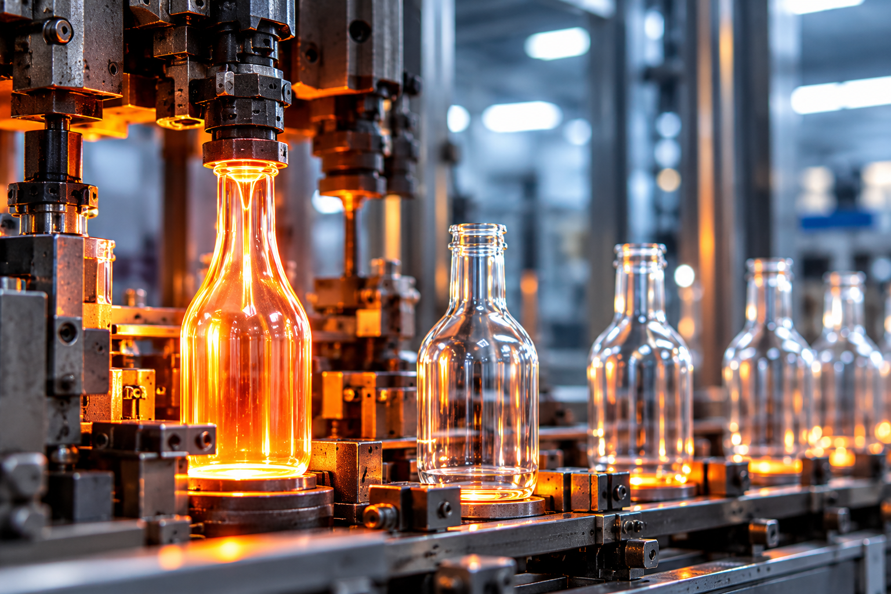
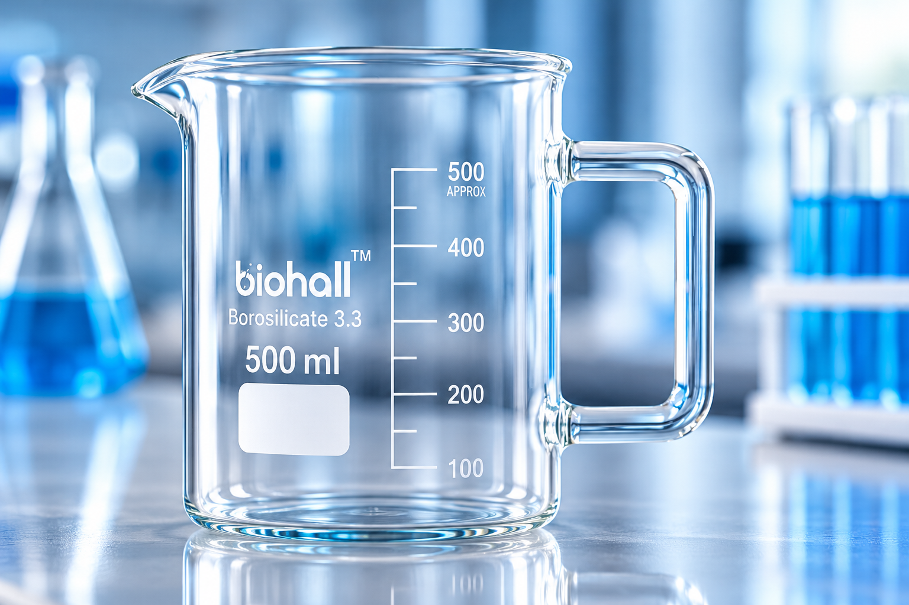
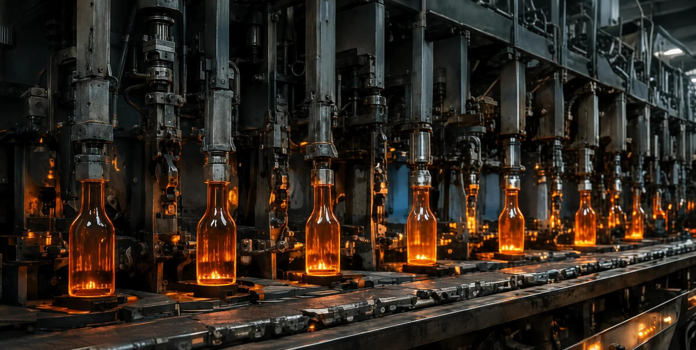
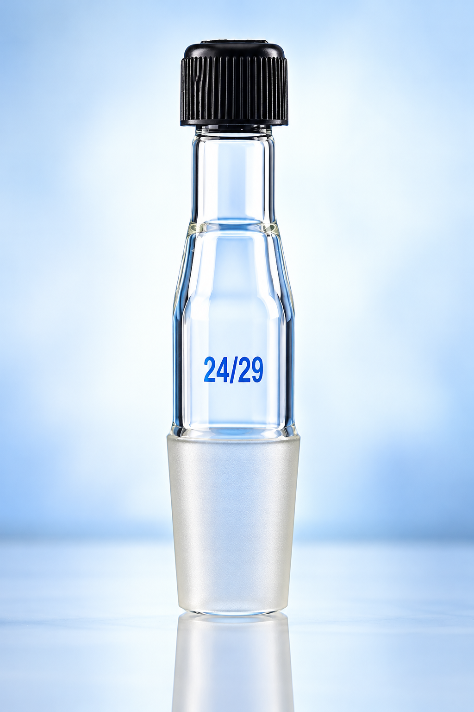

Science is our focus.
Laboratory glassware for research, education, and industrial environments.
THE SCIENCE OF PRECISION
Laboratory glassware designed for accuracy, reliability, and the evolving demands of research, testing, and laboratory applications.


FORM MEETS FUNCTION.01 MEET BIOHALL
Small details.
Extraordinary possibilities.
Biohall Labware manufactures and exports laboratory glassware for research, education, and industry. We bring together material expertise, careful production, and responsive supply support.
From everyday beakers to volumetric glassware, our focus is helping you work with confidence.
About BiohallCountries connected
through our supply network
02 THE LABWARE COLLECTION
03 MATERIAL. METHOD. MASTERY.
PRECISION STARTS LONG BEFORE THE FIRST MEASUREMENT.Glass forming, careful annealing, and detailed inspection shape every piece of Biohall labware.

Automatic and semi-automatic production, supported by skilled glassworking.
Controlled annealing helps relieve internal stress in the finished glassware.
Dimensional, joint-fit, and print checks bring quality into focus.
04 QUALITY, WITHOUT COMPROMISE
Our quality approach considers material reliability, dimensional precision, and readable graduations.
Borosilicate 3.3, selected for thermal and chemical resistance.
Wall thickness and dimensions checked against technical requirements.
Printing checked through production for clear, dependable markings.
05 THE BIOHALL DIFFERENCE
From your first enquiry to your next repeat order, we focus on what makes a working relationship last.
Laboratory glassware for research, education, and industrial environments.
General labware, volumetric essentials, and specialist glass connections.
Export packaging and documentation support for international supply.
Responsive support for bulk orders, distribution, and private label enquiries.
06 SCIENCE KNOWS NO BORDERS
Rooted in India, supporting international laboratory supply requirements with precision and consistency.
Contact Our Team07 PURPOSE, IN PRACTICE
Wherever questions are asked and answers are measured, the right glassware makes a difference.
08 OEM & PRIVATE LABEL
Biohall Labware supports OEM, private label, and custom glassware enquiries for distributors and trade partners.
Become a Distributor
BUILT AROUND YOUR REQUIREMENTSYOUR NEXT CHAPTER,THE NEXT DISCOVERY STARTS WITH A CONVERSATION
Connect with our team to discuss your
laboratory glassware requirements.